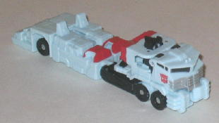 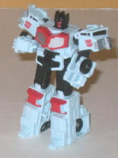
Allegiance : Autobot
Size : Legend
Difficulty of Transformation : Easy
Color Scheme : Light pastel blue, black, and some red and dull silver
Individual Rating : 6.6
Set Price
: $20 U.S.
Series:
Classic/Generation One
Overall Rating
: 7.2
 Autobot
Hot Zone
Autobot
Hot Zone
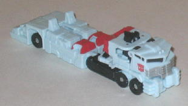
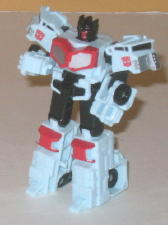
Allegiance
: Autobot
Size
: Legend
Difficulty of Transformation
: Easy
Color Scheme
: Light pastel blue,
black, and some red and dull silver
Individual Rating
: 6.6
(NOTE: Because this is a repaint, this is not a full-blown review. This mainly covers any changes made to the mold and the color scheme, and merely compares it to Legends of Cybertron Optimus Prime. For a review on the mold itself, read the review of Legends of Cybertron Optimus Prime here .)
Hot Zone is a redeco
that's an homage to G1 Hot Spot, a fire truck that formed the core component
of the gestalt Defensor. I have to say, light pale blue looks surprisingly
good on this mold, perhaps because it's so small that the bright plastic
doesn't ever get to the point of looking TOO bright. The two major colors
on Hot Zone-- red and black-- are also EXCELLENT contrast colors, and all-in-all
the color scheme is both fairly unique and original and works quite well.
There are a few very minor quibbles I have about Hot Zone's colors, however.
The first is that, though the dull silver works on his red chest, it doesn't
work well against his pale blue plastic-- not enough contrast. I'm also
not fond of his red-painted face-- just that looks weird.
No mold changes have
been made to Universe 2.0 Hot Zone.
 Hun-gurrr
Hun-gurrr
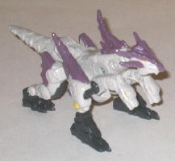
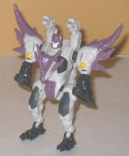
Allegiance
: Decepticon
Size
: Legend
Difficulty of Transformation
: Easy
Color Scheme
: Dull off-white, dark
gray, dark dull muddy purple, and some yellow and white
Individual Rating
: 6.6
(NOTE: For a review on the mold itself, read the review of Legends of Cybertron Scourge here .)
Like Hot Zone (and all
the other toys in this set), Hun-gurrr is the core component of a G1 gestalt--
in this case, the main Terrorcon that combined with the others to form
Abominus. (Yeah, his name is
real
lame, but it's an homage to G1
character, so what can ya do.) Like the original Hun-gurrr, this guy's
a multi-headed dragon, and again, carries over the G1 colors almost to
a tee. Unfortunately, his G1 colors weren't so hot. Pale off-white makes
for a mighty dull main color, though the dull purple provides at least
some fairly good contrast and some much-needed color on this otherwise
pretty monochrome 'Con. The dark gray-- Hun-gurr's other main color-- is
also good for contrast, but is just another dull color, so it's doesn't
look all that great. Hun-gurr also has a few yellow highlights, but they're
so light they're pretty hard to make out against the off-white plastic,
so that was a pretty poor color choice, methinks. If Hasbro had flipped
the amounts of off-white and dull purple plastic, I think this toy would
have looked better. As it is, I think this is the least impressive of the
three paint jobs that this toy has had.
No mold changes have
been made to Universe 2.0 Hun-gurrr.
 Razorclaw
Razorclaw
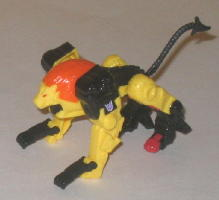
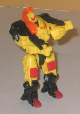
Allegiance
: Decepticon
Size
: Legend
Difficulty of Transformation
: Very
Easy
Color Scheme
: Yellow, black, and
some red and light orange
Individual Rating
: 7.8
(NOTE: For a review on the mold itself, read the review of Legends of Cybertron Leobreaker here .)
Razorclaw in the original
G1 series was the core component of the Predacon gestalt, Predaking. Obviously
this Legends repaint can't combine, but it still serves as a dynamite homage
to the G1 version, who had the same lion alt mode. Like the others in the
set, this Razorclaw also carries over the color scheme of the original
Razorclaw, with yellow being the primary color. Now normally, I'm not a
big fan of yellow, but it's admittedly a very fitting color for a lion,
and the other colors do a great job of providing contrast, particularly
the black. The red paint applications on the legs and the fiery orange
mane also complement the yellow very well, used in the small amounts that
they were. Really, the only complaint I have about Razorclaw is the red
face, which I think looks ugly, though even that is G1-accurate, so I can
hardly blame Hasbro for sticking to that. Combined with the already well-done
mold, this is my favorite toy of the set (and my favorite color scheme
this mold has gotten).
No mold changes have
been made to Universe 2.0 Razorclaw.
 Scattorshot
Scattorshot
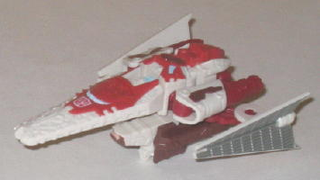
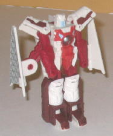
Allegiance
: Autobot
Size
: Legend
Difficulty of Transformation
: Very
Easy
Color Scheme
: Off-white, dull dark
red, and some light sky blue, brown, and silver
Individual Rating
: 7.7
(NOTE: For a review on the mold itself, read the review of Legends of Cybertron Vector Prime here .)
Scattorshot is an homage
to the G1 "main" Technobot-- also a futuristic spacecraft like this Vector
Prime repaint-- who became the main body of the gestalt Computron. Scattorshot
more or less has the same color placement as his G1 counterpart here, with
an off-white being the main color (though a slightly brighter off-white
than is on Hun-gurrr). Dark red and a bit of brown serve as the main secondary
colors, with silver helping to round them out. It's certainly not a bad
color scheme-- not of the main colors clash-- but it's not a particularly
exciting one, either. None of these colors is really an eye-catching color,
they're all fairly dull. The only exception to this are the few spots of
light blue that Scattorshot has on his chest, windows, and face. In the
few places where it's used against a darker color like red, it contrasts
very well-- unfortunately, the rest of Scattorshot's head is white, and
the light blue face doesn't look good at all next to that color.
No mold changes have
been made to Universe 2.0 Scattorshot.
 Silverbolt
(Legend)
Silverbolt
(Legend)
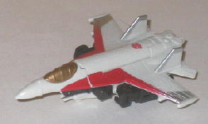
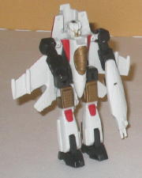
Allegiance:
Autobot
Size
: Legend
Difficulty of Transformation
: Very
Easy
Color Scheme
: Light greyish off-white,
charcoal black, and some red, silver, and dull metallic gold
Individual Rating
: 7.2
(NOTE: For a review on the mold itself, read the review of Legends of Cybertron Thundercracker here .)
Silverbolt was the main
component of Superion, the gestalt form of the G1 Aerialbots. Again, like
the other figures in this box set, Universe 2.0 Legend Silverbolt is a
pretty faithful recreation-- in terms of color scheme and general alt mode--
compared to his G1 form. He's the third figure in the set to sport an off-white/light
gray as his main color, but his accent colors of black, red, and gold all
go extremely well with the off-white and keep it from getting dull. Particularly
in robot mode, the black and gold help to break up all that off-white,
and really help keep it from making the toy look too dull. The red gives
the toy a really nice dash of color, particularly in vehicle mode, where
there's some nice stripes on the sides of the cockpit and the wings. I'm
a bit conflicted on the silver, however-- on one hand, it certainly fits
"Silverbolt" and I really like the way the red stripes fade into silver
on the wings, but other the other hand the silver just doesn't go well
with the off-white at all. There's barely any contrast against it, to the
point where it's a bit hard to see, particularly on the rear wings. Still,
that minor quibble aside, Silverbolt's colors go together so well this
is definitely my favorite paint job this mold has had so far.
No mold changes have
been made to Universe 2.0 Legend class Silverbolt.
The Special Team Leaders set is a must-buy package for any fan of Legends-class figures. A fair number of them are the best paint jobs their respective molds have gotten, and even on the couple whose paint jobs are only "so-so" (Hun-gurrr and Scattorshot), they're still great homages all around. It was quite frankly an ingenious idea to repaint these figures into the "core figures" of so many of the G1 combiner sets, given how well their alt modes already fit, and at only $20 for 5 legends figures, it's a great deal.
Reviews by Beastbot